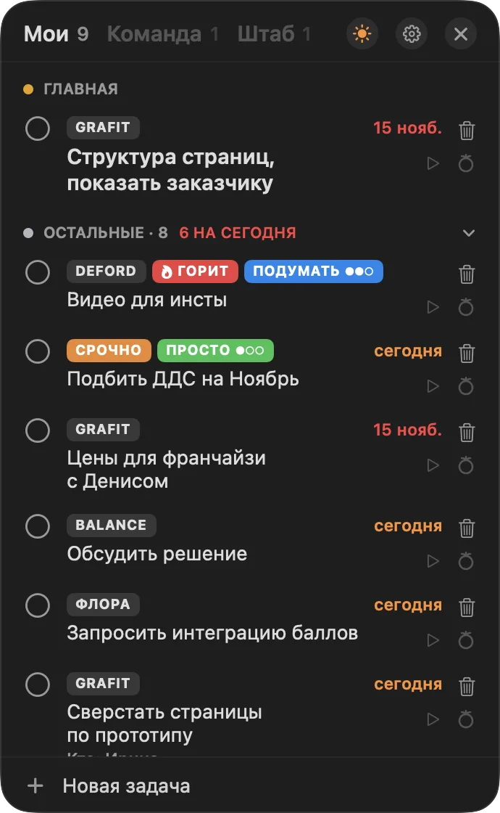
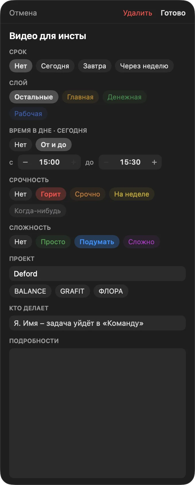
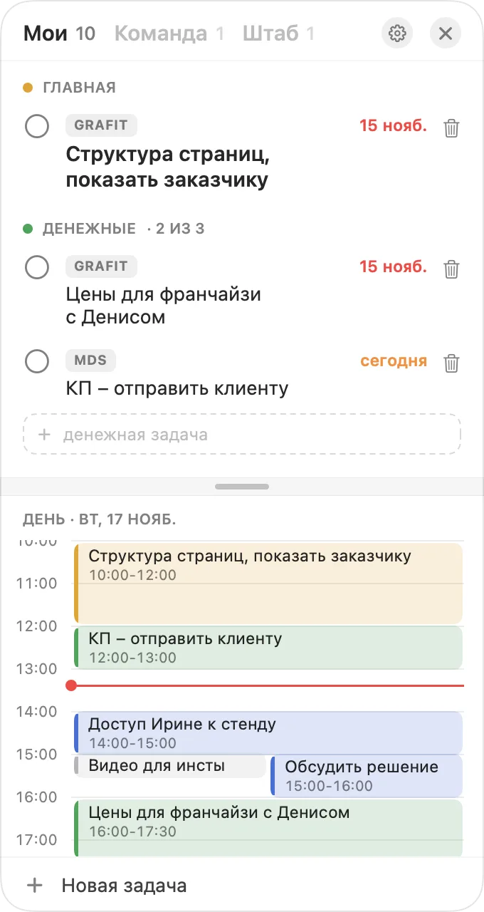
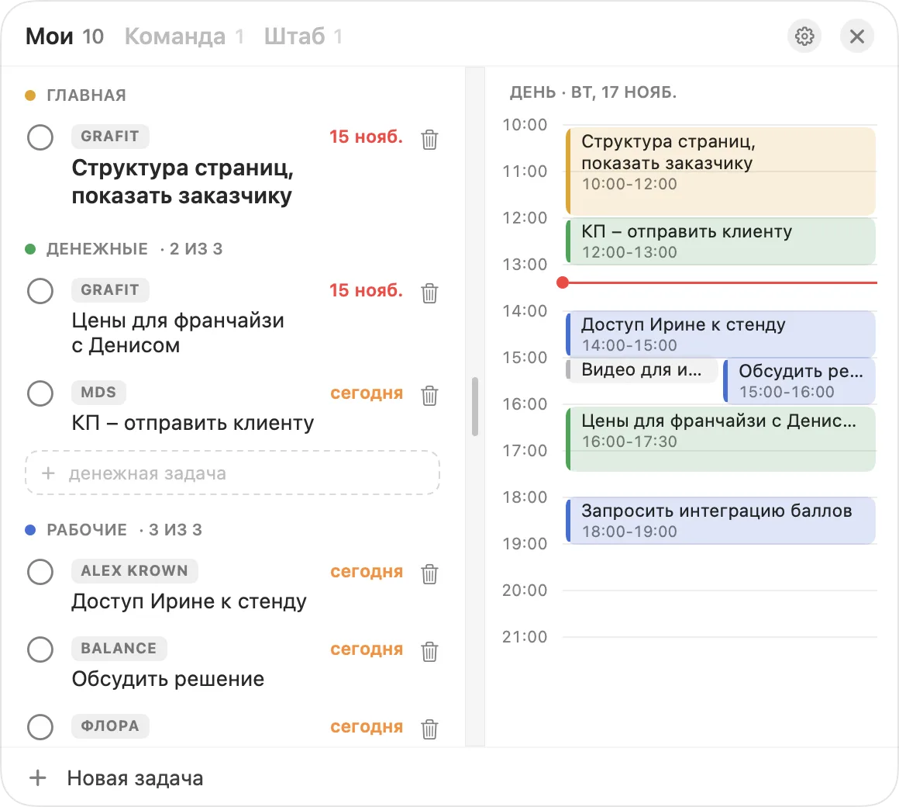
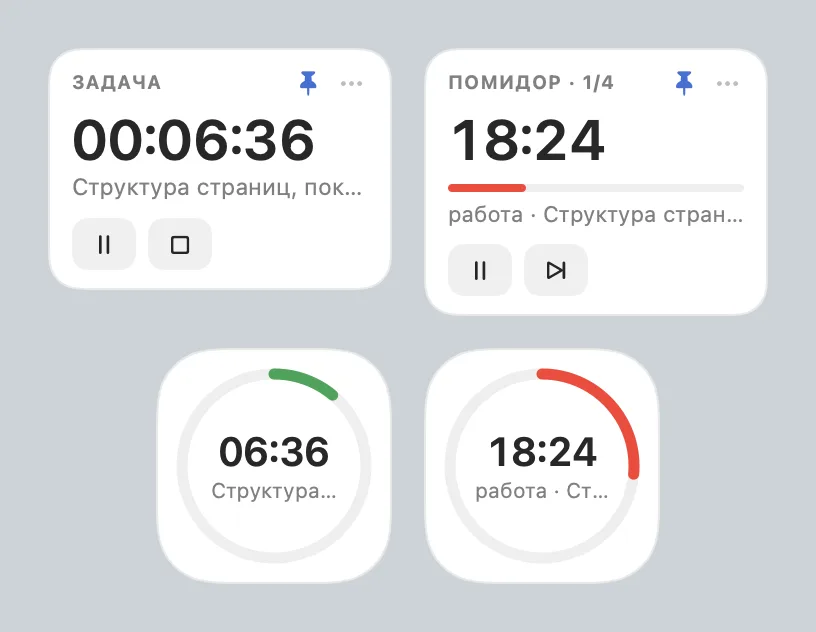
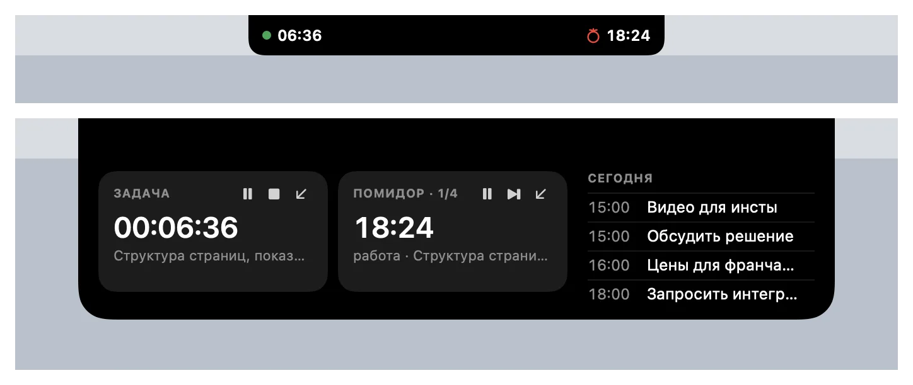
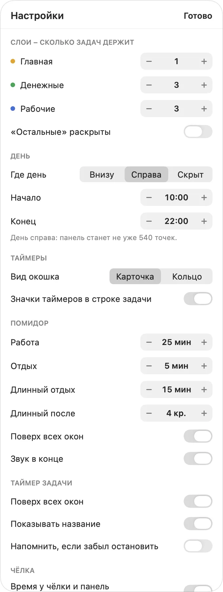

Виджет задач собран и стоит на маке: слои, день, таймеры, чёлка, настройки – но полдня ты работал в моей пробной копии
Послушать итог голосом
Новая версия «Задач» установлена и открыта на твоих настоящих задачах. Всё, что ты выбрал (А1 с переключением на А3, Б2 с переключением на Б3, В2) и шестерёнка с настройками, работает. Моя ошибка дня: пробный экземпляр для проверки я не закрыла, а отчиталась, что закрыла, и с 13:34 до 17:05 ты сидел в копии с выдуманными задачами.
1. Что случилось с пробной копией и что с задачами
- Причина путаницы – я. Команда закрытия искала пробный экземпляр по пути, которого в его процессе не было. Проверку «закрыт ли» я сделала той же командой и поверила ей.
- Отсюда три твои претензии. Слои в копии я расставила сама для снимков – поэтому «сама решаешь, что главное». Копия была собрана до правки – поэтому отказ при смене слоя. Копия не связана с Евой – поэтому закрытые в ней задачи нигде не закрывались.
- Боевые задачи целы. 16.11 в файле было 18 открытых, сейчас 8. Все 11 ушедших лежат в «готово» с твоими галочками за 16–17.11. С 02:58 боевой файл никто не трогал.
- Из копии перенесено настоящее: задача «Подбить ДДС на Ноябрь» (сегодня, срочно, просто) и время 20:00–22:00 у «Структуры страниц». Две закрытые в копии задачи были выдуманными, в боевом файле закрывать нечего.
- В боевой панели слои пустые. Что главное и что денежное, расставляешь ты.
2. Слои: решаешь ты, панель не отказывает

- Главная, денежные, рабочие, остальные. Лимиты 1 / 3 / 3, «Остальные» свёрнуты строкой с числом и счётом «на сегодня».
- Поставить в слой три способа: правой кнопкой по задаче – «Слой»; нажать на пустое место «+ денежная задача»; в окне задачи – кнопки «Слой».
- Отказа больше нет. Новая главная сменяет прежнюю, та уходит в «Остальные». В денежные и рабочие задача встаёт и сверх лимита – счёт становится красным.
3. Время «от и до» прямо в задаче и день по часам

- В окне задачи появились поля «Слой» и «Время в дне: с … до …» шагом полчаса. Время встаёт на срок задачи, если он сегодня или позже, иначе на сегодня.
- День 10–22 внизу панели, красная линия – сейчас, открывается на текущем часе. Задачу можно бросить на час мышью или поставить правой кнопкой – «В день».
- Блок двигается перетаскиванием; длина и «убрать из дня» – правой кнопкой по блоку.


4. Таймеры и чёлка

- Два таймера: таймер задачи и помидор. Запуск – значками в строке задачи или из меню без задачи.
- Окошки ставятся куда угодно, у каждого своя булавка «поверх всех окон», сразу включена. Вид – карточка или кольцо.
- Честный счёт. Сон мака и закрытое приложение в счёт не идут. После отдыха работа ждёт твоего нажатия. Отработанное пишется в журнал рядом с файлом задач.

- Чёлка: время таймеров по бокам выреза, при наведении – панель с таймерами и повесткой дня. Встречи берутся из календаря мака; доступ система спросит при первом раскрытии.
5. Шестерёнка и солнышко

- Шестерёнка в шапке – все настройки: лимиты слоёв (ноль убирает слой), где день (внизу, справа, скрыт), часы дня, вид таймеров, минуты помидора, чёлка.
- Солнышко в шапке – плотный вид: панель менее прозрачная, цветные плашки залиты цветом. Второе нажатие возвращает как было.
Что проверено
| Что | Как | Итог |
|---|---|---|
| Хранилище, панель, окно, таймеры | 4 набора тестов | 146 + 112 + 12 + 34, все прошли |
| Все правки одним взглядом со стороны | независимый ревизор, 13 коммитов | порчи файла задач нет; 5 важных замечаний, 4 исправлены, 1 ждёт выкладки бота |
| Боевая панель | кадр с экрана после установки | слои, день на текущем часе, блок 20:00–22:00 видны |
| Чёлка и окошки | живая проба с наведением мыши | раскрывается и закрывается |
Не проверено: запрос доступа к календарю в боевой панели, перетаскивание задачи на час мышью (проверено только меню и код), полноэкранные программы.
Нужно от тебя
- «Да» на выкладку бота Евы. Правка готова и закоммичена (ff3fd41): без неё Ева перестаёт видеть срок у задач со слоем или временем. Система выкладку без твоего слова не пустила.
- Закрытие в виджете = закрытие у Евы. Сейчас это не связано. Поправка 17.11 вечером: сначала здесь стояли четыре задачи, названные без сверки. Сверка показала шесть: k37, k38, k39, k40, k42 и k43 – в виджете закрыты, у Евы открыты (k8 и k13 ты уже закрыл кнопкой в боте). Связка сделана и выложена – см. следующий отчёт.
- Голосом через Еву – слой и время «от и до»: тоже правка бота, пойдёт той же выкладкой.
- Переезд. Чат разжирел до 400 тыс. на шаг – напиши «переезд».
Что раскрыть
- как именно новая главная сменяет прежнюю и что видно при переполнении слоя;
- что пишется в журнал таймеров и где он лежит;
- список 11 закрытых задач из «готово»;
- что осталось известным и не исправленным после ревизии.